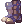
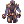
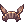

A Beginner's Guide to BG

|
This page is in progress Please check back later for additional changes.
Last updated on August 28, 2021 10:32 am |
Hi! This is an EXTREMELY WIP guide to BG, or Battlegrounds in NovaRO. If you'd like to contribute, feel free to just edit the page, thanks! ^^
Overview
This is a overall guide to Battlegrounds, a collection of team-based PvP games. Anyone level 190 or higher can join by being in a town or BG waiting room, and typing @joinbg into the chat box.
Stats
Although your statspread will vary depending on what class you're playing, it's good to know what investing into each stat will give you. Keep in mind that you need 120 of a stat to utilize that stat's Temporal Boots, and 110 of the stat to use that stat's Glove.
- STR - Carrying capacity (helps to resist Shadow Chasers' Masquerade skills), ATK (gives more ATK to melee weapons than ranged). Reduces duration of being stuck in a Sorcerer's Vacuum Extreme.
- AGI - Increases ASPD, FLEE. 100 AGI gives immunity to Sleep, Bleeding. AGI also helps resist Shadow Chasers' Masquerade skills. Soft defense (flat reduction on physical damage)
- VIT - Increases MHP, healing item effectiveness (important since most healing will be coming from potions), soft DEF and MDEF (flat reduction on physical and magic damage, respectively). 100 VIT gives Stun immunity.
- INT - Increases MSP, MATK, SP recovery item effectiveness. 100 INT gives silence immunity. Helps reduce Variable Cast Time (VCT).
- DEX - Helps reduce Variable Cast Time (VCT) more effectively than INT. Increases ATK (gives more ATK to ranged weapons than melee).
- LUK - Increases Perfect Dodge. Reduces time spent in Warlocks' White Imprison (when cast by enemies) and chance of getting affected by Genetics' Mandragora Howling.
Classes
This is a brief overview of every class that is available for Battlegrounds. If you're deciding which class you want to try, you can find a quick description of each class's role over here. More nuanced details for each class and non-standard roles will not be provided, for the sake of brevity. You can take a look at specific Class Guides to more in-depth information about each class.
Keep in mind that most classes play differently than the builds that they normally use in PVM or WOE game modes. Battlegrounds has a large focus on individual play, so builds that are more self-sufficient (ie, does not rely on Minstrel's A Poem of Bragi, does not require Arch Bishop buffs, etc.) will be more effective. You should still know how to take advantage of proper support when your team has the right members, but do not create a build with support as a given.
 Rune Knight
Rune Knight
Rune Knights can deal immense physical single-target melee burst damage via  Crush Strike, though they no longer need to use
Crush Strike, though they no longer need to use  Auto Counter due to critical being enabled in pvp, making the job have a high AoE damage with
Auto Counter due to critical being enabled in pvp, making the job have a high AoE damage with  Ignition Break, Storm Blast and a powerful single target long-ranged skill on
Ignition Break, Storm Blast and a powerful single target long-ranged skill on  Sonic Wave.
Sonic Wave.
Rune Knights also don't need to sacrifice their survivability for power, resulting in strong tanks that can one-shot most enemy players every 30 seconds when Crush Strike's cool down is up. They can also make use of  Dragon Howling to lock opponents down so they can run next to them to strike, or use
Dragon Howling to lock opponents down so they can run next to them to strike, or use  Death Bound to reflect enemy melee attackers. Aside from their melee prowess, they can provide several powerful self-buffs using runes created from
Death Bound to reflect enemy melee attackers. Aside from their melee prowess, they can provide several powerful self-buffs using runes created from  Rune Mastery.
Rune Mastery.
Alternatively, Rune Knights can use  Dragon Breath and
Dragon Breath and  Dragon Breath - Water to do AoE Ranged damage. This skill can only be spammed if you have a Minstrel buffing you with A Poem of Bragi, since stacking ACD gear is not recommended. This skill isn't affected by your ATK, and only increases based on your current HP, max SP, and ranged damage modifiers.
Dragon Breath - Water to do AoE Ranged damage. This skill can only be spammed if you have a Minstrel buffing you with A Poem of Bragi, since stacking ACD gear is not recommended. This skill isn't affected by your ATK, and only increases based on your current HP, max SP, and ranged damage modifiers.
 Royal Guard
Royal Guard
Royal Guard's defining ability is to protect allies through  Devotion. For game modes which require carrying objectives, the importance of Devotion cannot be understated. They can also protect any heavy damage based class and allow them to survive longer, which gives them more time to destroy the enemy team.
Devotion. For game modes which require carrying objectives, the importance of Devotion cannot be understated. They can also protect any heavy damage based class and allow them to survive longer, which gives them more time to destroy the enemy team.  Defender will let you reduce ranged damage so much it'll become negligible, and this also extends to players that you use Devotion on.
Defender will let you reduce ranged damage so much it'll become negligible, and this also extends to players that you use Devotion on.  Pinpoint Attack at different levels will allow you to remove a Sura's Spirit Spheres or break other players' equipment.
Pinpoint Attack at different levels will allow you to remove a Sura's Spirit Spheres or break other players' equipment.  Trample and
Trample and  Earth Drive will allow you to clear Ground-based traps. Without a shield, Royal Guards lose a lot of their defensive buffs such as Autoguard, Reflect Shield, and Defender. Gospel will allow you to clear many negative (but also positive) status effects on yourself as well.
Earth Drive will allow you to clear Ground-based traps. Without a shield, Royal Guards lose a lot of their defensive buffs such as Autoguard, Reflect Shield, and Defender. Gospel will allow you to clear many negative (but also positive) status effects on yourself as well.
 Warlock (NOT UP TO DATE)
Warlock (NOT UP TO DATE)
Warlocks can build highly offensive or defensive, and can hybridize between depending on their skill choices and gearing. Offensive Warlocks are generally extremely frail, but can deal heavy magic-based damage. They have powerful single-target burst with  Tetra Vortex, which also allows them to switch or mix elements when an enemy is resisting a specific element. With proper gearing, a barrage of
Tetra Vortex, which also allows them to switch or mix elements when an enemy is resisting a specific element. With proper gearing, a barrage of  Crimson Rocks and/or
Crimson Rocks and/or  Comets launched rapidly through
Comets launched rapidly through  Reading Spell Book and
Reading Spell Book and  Release can deal a great amount of area magic damage. Be wary with Crimson Rock usage as you can break enemies out of Crystallize. Finally, the damage Warlock's ace skill is
Release can deal a great amount of area magic damage. Be wary with Crimson Rock usage as you can break enemies out of Crystallize. Finally, the damage Warlock's ace skill is  Intense Telekinesis, which will turn
Intense Telekinesis, which will turn  Soul Expansion into a lethal magic machine gun. It has a long cool down, so use it to secure a victory or to turn a tide.
Soul Expansion into a lethal magic machine gun. It has a long cool down, so use it to secure a victory or to turn a tide.
A supportive Warlock will instead focus on disabling and controlling enemy players.  Frost Misty,
Frost Misty,  Jack Frost and
Jack Frost and  Sienna Execrate are all powerful area skills that can slow or halt a group of adversaries.
Sienna Execrate are all powerful area skills that can slow or halt a group of adversaries.  White Imprison followed by
White Imprison followed by  Marsh of Abyss is a great skill combination to escape from an enemy, or to set them up for other members of your team to kill.
Marsh of Abyss is a great skill combination to escape from an enemy, or to set them up for other members of your team to kill.  Earth Strain can strip equipment from a stack of enemies and is one of the few skills that can strip accessories. Finally, the support Warlock's ace skill is
Earth Strain can strip equipment from a stack of enemies and is one of the few skills that can strip accessories. Finally, the support Warlock's ace skill is  Stasis, which can lock an entire enemy team's skill usage. Be aware it affects yourself and allies as well, so the best position is when you're on your own and surrounded by enemies.
Stasis, which can lock an entire enemy team's skill usage. Be aware it affects yourself and allies as well, so the best position is when you're on your own and surrounded by enemies.
 Sorcerer
Sorcerer
As with Warlock, Sorcerer can also play offensively or defensively and hybridize between through efficient gear swapping. Arguably their most notable skill is  Diamond Dust, which can Crystallize a stack of enemies and leave them unable to use items, skills or move, setting them up for a barrage of AoE skills in
Diamond Dust, which can Crystallize a stack of enemies and leave them unable to use items, skills or move, setting them up for a barrage of AoE skills in  Psychic Wave,
Psychic Wave,  Earth Grave and Varetyr Spear.
Earth Grave and Varetyr Spear.  Arrullo is another option for enemy stack lockdown if Diamond Dust is resisted or blocked. Sorcerers are also very survivable and can make use of
Arrullo is another option for enemy stack lockdown if Diamond Dust is resisted or blocked. Sorcerers are also very survivable and can make use of  Safety Wall and
Safety Wall and  Wall of Fog to prevent damage from many sources.
Wall of Fog to prevent damage from many sources.
They are one of the game's most useful disrupters, with  Dispel to remove enemy buffs (and debuffs from allies),
Dispel to remove enemy buffs (and debuffs from allies),  Killing Cloud for enemy cast interruption,
Killing Cloud for enemy cast interruption,  Spider Web for single-target movement lock down, Soul Burn for a fast skill block, and
Spider Web for single-target movement lock down, Soul Burn for a fast skill block, and  Land Protector to clear ground effects and to block most ground-based skills. With Land Protector, keep in mind the location of your allied field effects and take care not to remove them with it unless totally necessary. In addition, you may also use
Land Protector to clear ground effects and to block most ground-based skills. With Land Protector, keep in mind the location of your allied field effects and take care not to remove them with it unless totally necessary. In addition, you may also use  Spell Breaker to stop the enemy from casting any skill. This is useful when it comes to enemies who are continuously using a skill with a significant casting time
Spell Breaker to stop the enemy from casting any skill. This is useful when it comes to enemies who are continuously using a skill with a significant casting time
Sorcs can also enhance their effects via their elemental spirits. Commonly chosen effects include Lv2 Aqua's increase to Crystallize chance from Diamond Dust, or Lv1 Ventus' increase to movement speed and fixed cast time decrease. The elemental spirit also provides a panic button in  Elemental Shield which can save your team from a wipe if timed correctly.
Elemental Shield which can save your team from a wipe if timed correctly.
 Mechanic (NOT UP TO DATE)
Mechanic (NOT UP TO DATE)
A potent tanking support class with several utility options. Their ace skill is  Self Destruction, which sacrifices all their SP and their Mado Gear to deal heavy area damage that can instantly kill most targets. Self Destruction can be used as a game changer, either to ensure victory or to stage a come back.
Self Destruction, which sacrifices all their SP and their Mado Gear to deal heavy area damage that can instantly kill most targets. Self Destruction can be used as a game changer, either to ensure victory or to stage a come back.
Neutral Barrier
Stealth Field
Magnetic Field
Cold Slower
 Genetic
Genetic
Genetic has a great support skill in  Full Chemical Protection,an AoE damage skill in
Full Chemical Protection,an AoE damage skill in  Cart Cannon, which can be combined with
Cart Cannon, which can be combined with  Spore Explosion to deal more damage, and many different disruptive and control skills.
Spore Explosion to deal more damage, and many different disruptive and control skills.
 Howling of Mandragora will add fixed cast time to every skill of enemies affected, even their instant cast skills, which will hamper their ability to make any responses. Crazy Weed can destroy many land effects, including Pneuma, Mechanic's Neutral Barrier and even the Sorcerer's Land Protector.
Howling of Mandragora will add fixed cast time to every skill of enemies affected, even their instant cast skills, which will hamper their ability to make any responses. Crazy Weed can destroy many land effects, including Pneuma, Mechanic's Neutral Barrier and even the Sorcerer's Land Protector.
Genetics also have access to great movement disruption abilities, such as  Illusion Doping,
Illusion Doping,  Thorn Trap , and homunculus skills like Volcanic Ash (Dieter) and
Thorn Trap , and homunculus skills like Volcanic Ash (Dieter) and  Needle of Paralysis (Sera)
Needle of Paralysis (Sera)
 Ranger (NOT UP TO DATE)
Ranger (NOT UP TO DATE)
Ranger has great opportunities to shine in Battlegrounds, as Pneuma effects are never guaranteed for the enemy team. Their classic combination of  Unlimit boosted
Unlimit boosted  Arrow Storm can completely wipe enemy stacks and decide team fights very early on. Even without Unlimit, Arrow Storm can still be threatening with the proper equipment and combined with a teammate's burst damage skills. They also protect themselves by staying in
Arrow Storm can completely wipe enemy stacks and decide team fights very early on. Even without Unlimit, Arrow Storm can still be threatening with the proper equipment and combined with a teammate's burst damage skills. They also protect themselves by staying in  Camouflage every moment where they aren't attacking. Rangers are also great at trapping, being able to flood chokepoints with
Camouflage every moment where they aren't attacking. Rangers are also great at trapping, being able to flood chokepoints with  Ankle Snare or selective locations with
Ankle Snare or selective locations with  Electric Shocker.
Electric Shocker.
 Minstrel &
Minstrel &  Wanderer
Wanderer
Minstrel
The most important songs and buffs a minstrel should get for battlegrounds are A Poem of Bragi (this one is very demanded among all the dps jobs because of the aftercast delay reduction).  Frigg's Song & and
Frigg's Song & and  Lerad's Dew (both are very useful for tank and dps who relies in hp like tiger cannon sura and dragon breath rune knight).
Lerad's Dew (both are very useful for tank and dps who relies in hp like tiger cannon sura and dragon breath rune knight).  Unlimited Humming Voice (especially for magic dps like warlocks, dps performers and oboro/kagerou).
Unlimited Humming Voice (especially for magic dps like warlocks, dps performers and oboro/kagerou).  Harmonize &
Harmonize &  Echo Song (Hamonize will reduce all stats by 30 to the target and the caster, is useful for breaking instant cast on enemies and reducing masquerade chance for shadow chasers. Def is not really important nowadays since most of the dps inside battlegrounds pierce/ignore def due to skills or gears but is very needed to remove Harminze side effects on allies and the user).
Echo Song (Hamonize will reduce all stats by 30 to the target and the caster, is useful for breaking instant cast on enemies and reducing masquerade chance for shadow chasers. Def is not really important nowadays since most of the dps inside battlegrounds pierce/ignore def due to skills or gears but is very needed to remove Harminze side effects on allies and the user).  Gloomy Day &
Gloomy Day &  Poem of Netherworld (Gloomy is a strong and very useful skill for disabling a single target, prioritize this one for shadow chasers, sorcerers or enemy dps like warlocks, poem is very useful for trap and snare enemies).
Poem of Netherworld (Gloomy is a strong and very useful skill for disabling a single target, prioritize this one for shadow chasers, sorcerers or enemy dps like warlocks, poem is very useful for trap and snare enemies).
Invulnerable siegfried (gives elemental resist which is good against some elemental dps, you will need
to be in the same team with a wanderer at least).
Metallic Sound &  Reverberation (Mellatic sound is the current meta and strongest damage skill for performers but at the same time is expensive to gear, is locked to force neutral, single target and ranged is kinda short compared to reverberation. Reverberation
is an elemental magic damage skill with a long-range, isn't so strong compared to metallic sound but
still useful for killing not tanky dps like guillotine cross, warlocks, oboro/kagerou and performers).
Reverberation (Mellatic sound is the current meta and strongest damage skill for performers but at the same time is expensive to gear, is locked to force neutral, single target and ranged is kinda short compared to reverberation. Reverberation
is an elemental magic damage skill with a long-range, isn't so strong compared to metallic sound but
still useful for killing not tanky dps like guillotine cross, warlocks, oboro/kagerou and performers).
Wanderer
Wanderer skills are more specific in terms of use, the most important song is  Swing Dance (this one is very useful because provides a big boost for the aspd of the owner and allies, which is needed for reducing skill animation and improving spam rate).
Swing Dance (this one is very useful because provides a big boost for the aspd of the owner and allies, which is needed for reducing skill animation and improving spam rate).
 Service for you and
Service for you and  Fortune Kiss (Service provides an increment of sp and consumption reduction, is very useful for builds that needs a high sp pool or skills that consumes high amount of it like metallic sound. Fortune kiss privides crit rate and crit damage, very useful to buff crit dps like physical rune knights and guillotine crosses.
Fortune Kiss (Service provides an increment of sp and consumption reduction, is very useful for builds that needs a high sp pool or skills that consumes high amount of it like metallic sound. Fortune kiss privides crit rate and crit damage, very useful to buff crit dps like physical rune knights and guillotine crosses.
 Charming Wink (Is a single target debuff skill and can produce hallucination, very useful if is used in the right time).
Charming Wink (Is a single target debuff skill and can produce hallucination, very useful if is used in the right time).
The rest of the skills and explanations are shared with the minstrel guide.
 Special Singer
(The only use is for removing fatigue after using ensemble songs like invulnerable siegfried)
Special Singer
(The only use is for removing fatigue after using ensemble songs like invulnerable siegfried)
 Guillotine Cross (NOT UP TO DATE)
Guillotine Cross (NOT UP TO DATE)
Cross Impact
Dark Claw
Rolling Cutter
Cross Ripper Slasher
Cloaking Exceed
Leech End
 Shadow Chaser
Shadow Chaser
Shadow Chaser is one of the game's most threatening controllers.
This job have a lot of tools to annoy the enemy, like  Masquerade-Weakness,
Masquerade-Weakness,  Masquerade-Ignorance, even you can ‘’disable’’ pets like mounts or homunculus with
Masquerade-Ignorance, even you can ‘’disable’’ pets like mounts or homunculus with  Masquerade-Gloomy.
Masquerade-Gloomy.
In addition, you can use stripping skills such as  Full Strip and
Full Strip and  Strip Accessory.
All these skills can be combined with the high mobility of this job with skills like
Strip Accessory.
All these skills can be combined with the high mobility of this job with skills like  Feint Bomb ,
Feint Bomb ,  Escape ,
Escape ,  Flying Kick(from taekwon job), and
Flying Kick(from taekwon job), and  Hiding , to become a headache for your enemies.
Hiding , to become a headache for your enemies.
Chasers, also have traps on Escape and  Manhole, ground skill that apply states, like
Manhole, ground skill that apply states, like  Maelstrom,
Maelstrom,  Bloody Lust, and
Bloody Lust, and  Chaos Panic, and different ways of killing the enemy with
Chaos Panic, and different ways of killing the enemy with  Shadow Form and
Shadow Form and  Triangle Shot.
Triangle Shot.
 Arch Bishop
Arch Bishop
Arch Bishops has an arsenal of useful support skills, such as buffs like  Clementia,
Clementia,  Canto Candius,
Canto Candius,  Expiatio and
Expiatio and  Sacrament.
Sacrament.
Aside from that, they are also capable of clearing debuffs from teammates with skills such as  Status Recovery,
Status Recovery,  Lauda Ramus,
Lauda Ramus, Lauda Agnus, and
Lauda Agnus, and  Clearance.
Clearance.
With well-timed  Pneuma and Safety Wall, they can also protect themselves and their teammates from incoming damage. With a click of
Pneuma and Safety Wall, they can also protect themselves and their teammates from incoming damage. With a click of  Vituperatum, they could also drop AoE
Vituperatum, they could also drop AoE  Lex Aeterna to make it easier for damage dealers to the enemies.
Lex Aeterna to make it easier for damage dealers to the enemies.
Arch Bishops, despite their image of being a full support class, could also deal considerable damage with  Adoramus.
Adoramus.
Sura
Sura, with spheres as its main catalyst, is the most mobile class in the game, utilizing the skill  Snap to quickly move around the map.
Snap to quickly move around the map.
They have an AoE control skill  Cursed Circle, and access to dispel Minstrel & Wanderer's song buffs through Lion's Howl, which makes them a good distractor and controller.
Cursed Circle, and access to dispel Minstrel & Wanderer's song buffs through Lion's Howl, which makes them a good distractor and controller.
They also have an anti-mele single counter-attack skill  Crescent Elbow and can avoid single ranged attack with
Crescent Elbow and can avoid single ranged attack with  Lightning Walk.
Lightning Walk.
To top it off, they also have their acolyte class skill buffs, such as  Blessing and
Blessing and  Increase Agility.
Increase Agility.
Suras can also be built as a damage dealer, mostly focusing on  Tiger Cannon and Asura Strike, but it requires more gameplay/skills.
Tiger Cannon and Asura Strike, but it requires more gameplay/skills.
Suras are also useful as an Emergency Caller (  Urgent Call) in Conquest game mode due to Snap.
Urgent Call) in Conquest game mode due to Snap.
 Kagerou (NOT UP TO DATE)
Kagerou (NOT UP TO DATE)
 Oboro (NOT UP TO DATE)
Oboro (NOT UP TO DATE)
 Rebellion
Rebellion
Rebellion is a burst damage and support class with extreme mobility rivaled only by Sura. As one of the squishiest classes due to their lack of ability to wear any one-handed weapons with a shield, they must carefully use their skill  Fallen Angel to "snap" around the battlefield and utilize the skills
Fallen Angel to "snap" around the battlefield and utilize the skills  Banishing Buster to dispel enemy buffs and
Banishing Buster to dispel enemy buffs and  Anti-Material Blast to reduce enemy Demi-Human resistance by 50%, vastly increasing the damage that they and their team deal to that target.
Anti-Material Blast to reduce enemy Demi-Human resistance by 50%, vastly increasing the damage that they and their team deal to that target.
They are also capable of one-shotting squishy targets with their burst skill  Slug Shot. Due to its unreliable damage and lack of survivability, Rebel is only recommended to masochists and extremely advanced players.
Slug Shot. Due to its unreliable damage and lack of survivability, Rebel is only recommended to masochists and extremely advanced players.
 Summoner
Summoner
Doram are know to be a cute class and also by many players, a useless class.
But it's completely wrong, Doram can be used as DPS with your main skill  Picky Peck, and Support with Tuna's Skills.
Picky Peck, and Support with Tuna's Skills.
To complete your build, don't forget some useful skills like  Arclouze Dash who give you +40 AGI and
Arclouze Dash who give you +40 AGI and  Bunch of Shrimp a huge boost for your ATK/MATK.
Bunch of Shrimp a huge boost for your ATK/MATK.
For your survival,  Stoop gonna be your favourite friend, for 6s reduce incoming damage by 90%.
Your second friend will be Tuna Party, at lvl 5 this shield is equal to 50% of your Max HP ( Can be cast on ally ).
Stoop gonna be your favourite friend, for 6s reduce incoming damage by 90%.
Your second friend will be Tuna Party, at lvl 5 this shield is equal to 50% of your Max HP ( Can be cast on ally ).
Two useful skills to remember,  Scar of Tarou to complete your DPS build and
Scar of Tarou to complete your DPS build and  Silverine Root Twist, a nightmare for some players.
Silverine Root Twist, a nightmare for some players.
 Star Emperor
Star Emperor
Star Emperor is a mobile burst damage class that mainly focuses on the combo skills  Prominence Kick and
Prominence Kick and  Solar Burst.
Solar Burst.
Using  Flying Kick to jump to enemies,
Flying Kick to jump to enemies,  New Moon Kickl to enter stealth to traverse the battlefield safely,
New Moon Kickl to enter stealth to traverse the battlefield safely,  Book of Dimensionsl-augmented Advent to grant them temporary shields, and
Book of Dimensionsl-augmented Advent to grant them temporary shields, and  Gravity Control to remove troublesome front-liners for 5 seconds, they specialize in assassinating classes that they have specified as their three Hatred targets.
Gravity Control to remove troublesome front-liners for 5 seconds, they specialize in assassinating classes that they have specified as their three Hatred targets.
They can choose to gear towards pure single-hit burst damage for deleting semi-tanky targets or invest in After-Cast Delay reduction to have a better chance of killing tanky targets.
 Soul Reaper
Soul Reaper
Soul Reaper is a support class with limited magic damage through their skills  Espa and
Espa and  Eswhoo. While Soul Linked (
Eswhoo. While Soul Linked (  Soul Linker Spirit), which they receive on spawn, they may use the skills
Soul Linker Spirit), which they receive on spawn, they may use the skills  Kaupe and
Kaupe and  Kaahi to mitigate damage taken by themselves and their opponents,
Kaahi to mitigate damage taken by themselves and their opponents,  Kaite to reflect magic or to increase the physical damage enemies take by 50%, or
Kaite to reflect magic or to increase the physical damage enemies take by 50%, or  Soul Division to increase enemies' After-Cast Delay by 50%. When faced with an unkillable tank, they can use
Soul Division to increase enemies' After-Cast Delay by 50%. When faced with an unkillable tank, they can use  Soul Explosion to deal a huge portion of their max HP as fixed damage to help the team knock them down.
Soul Explosion to deal a huge portion of their max HP as fixed damage to help the team knock them down.
Soul Reaper is an extremely challenging class due to its need for a deep understanding of PvP in order to use Kaite without killing your own allies.
 Super Novice
Super Novice
Ignoring their skill and gear limitations, their overall HP and SP pool is too small to withstand anything and their power output is not high enough to cause noticeable damage to most targets. While they have useful support skills in Pneuma and Safety Wall, other classes can provide the same support in addition to being able to tank hits.
If you're insistent, be prepared to work your build a lot to come up with something novel and unexpected. Definitely do not try Super Novice until you've had more experience in understanding the general flow of BG.
BG Buffer
- To start, talk to Sothis in the Hall of Valor (189,202). She'll allow you to receive, at the start of every BG round, a set of pre-selected buffs of your choosing and give you Sothis Shield.
- Each buff is assigned a point value. You have a limit of 100 points in total and can select any number of buffs, as long as they're within the 100 points threshold.
- Inside a BG round, you can use Sothis Shield to reapply all the buffs selected previously.
List of Buffs:
- Increase Agility - (10)
- Blessing - (20)
- Kyrie Eleison - (20)
- Expiatio - (80)
- Lauda Agnus - (10)
- Lauda Amus - (40)
- Odin's Power - (80)
- Renovatio - (10)
- Imposito Manus - (40)
- Sacrement - (40)
- Striking - (80)
- Poem of Bragi - (60)
- Services for You - (60)
- Acoustic Rhythm - (40)
- Assassin Cross - (30)
- Apple of Idun - (20)
- Rush Windmill - (40)
- Echo Song - (20)
- Song of Mana - (10)
- Lerad's Dew - (20)
- Frigg's Song - (30)
- Fortune - (60)
- Swing Dance - (60)
- Weapon Perfection - (70)
- Lound Exclamation - (50)
- Circle of Nature - (10)
- Symphony of Lover - (50)
- Harmonic Lick - (70)
- Drum Battle - (60)
- Fire Weapon - (30)
- Earth Weapon - (30)
- Wind Weapon - (30)
- Water Weapon - (30)
- Suffragium - (10)
- Angelus - (10)
- Blood Sucker - (20)
- Over Thrust - (80)
BG Secret Consumable Shop
- After 25 BG wins in a single week, the Sketchy Dealer Anna (231,199) allow you to buy multiple items from her secret stash.
- All items cost Valor Badges, are Account Bound and Rental for one week (aside from Yggdrasil Seeds and Berries).
- Item list:
- Mega Orlean's Course - 5000 Valor Badges (max 1/week)
- 30m Regeneration Potion - 500 Valor Badges (max 4/week)
- 30m Guyak Pudding - 1000 Valor Badges (max 4/week)
- 30m Big Defense Potion - 500 Valor Badges (max 4/week)
- 30m Big Magic Defense Potion - 500 Valor Badges (max 4/week)
- Yggdrasil Berry - 50 Valor Badges (max 30/week)
- Yggdrasil Seed - 30 Valor Badges (max 50/week)
Equipment
(TODO: List all pvp-focused/demi-resist gears and code it right, currently is an extremely unfinished list)
Recruit's Set
This is a beginner set of PVP gear that the Quartermaster will provide for free to characters at Lv175. If you've not yet acquired any type of PVP gear, this is the fastest way to start out. You should look to upgrading from this set as soon as you can.
| Item | Type | Classes | Effect |
|---|---|---|---|
| Recruit's Beret | Upper Headgear | Any | Reduces damage taken from Demihuman monsters by 5% |
| Recruit's Masque | Middle Lower Headgear | Any | Reduces damage taken from Demihuman monsters by 1% |
| Recruit's Shield | Shield | Any |
Adds 10% resistance to Water, Fire, Undead, and Shadow properties.
|
| Recruit's Plate | Armor | Swordsman Class / Merchant Class / Taekwon / Star Gladiator |
MDEF +3.
|
| Recruit's Suit | Swordsman Class / Merchant Class / Thief Class / Archer Class / Taekwon / Star Gladiator / Ninja Class |
MDEF +5.
| |
| Recruit's Robe | Novice Class / Mage Class / Acolyte Class / Soul Linker |
MDEF +10.
| |
| Recruit's Manteau | Garment | Any except Novice |
MDEF +1.
|
| Recruit's Muffler | Any |
MDEF +5.
| |
| Recruit's Greaves | Shoes | Swordsman Class / Merchant Class |
MDEF +1.
|
| Recruit's Boots | Swordsman Class / Merchant Class / Thief Class / Archer Class / Taekwon / Star Gladiator / Ninja Class |
MDEF +3.
| |
| Recruit's Shoes | Novice Class / Mage Class / Acolyte Class / Soul Linker |
MDEF +5.
| |
| Recruit's Ring | Accessory | Any |
HP +100.
|
Full DemiHuman Reduction
These are the standard gears for fully resisting the majority of other players in any PVP scenario. Most classes should always have a full reductions set available, even traditionally frail classes such as Warlock. Having a full reduction set on swap can let you resist far more attacks and either escape or counterattack.
Note for the armour, you should try to get a +6 refinement level for the extra bonuses. +9 is nice to have, but by no means mandatory when just starting a class.
| Item | Type | Classes | Acquisition | Effect |
|---|---|---|---|---|
 Defensive Cat Ear Beret [1] Defensive Cat Ear Beret [1]
|
Upper Headgear | All |
ATK +4.
| |
 Defensive Red Pom Band [1] Defensive Red Pom Band [1]
|
Upper Headgear | All |
MATK +4.
| |
 Challenger's Blindfold Challenger's Blindfold
|
Middle Headgear | All | Reduce damage from Demi-humans by 5% | |
 Handkerchief In Mouth Handkerchief In Mouth
|
Lower Headgear | Any | 3% reduced damage from human type monsters. | |
 Combat Knife Combat Knife
|
Weapon | Novice Class / Swordsman Class / Merchant Class / Thief Class / Mage Class / Archer Class / Soul Linker / Ninja Class |
Increases physical damage on DemiHuman race targets by 10%.
| |
 Long Mace Long Mace
|
Acolyte Class |
Range +3
| ||
 Illusion Long Mace [2] Illusion Long Mace [2]
|
Acolyte Class |
Range +3
| ||
 Purified Knight's Shield [1] Purified Knight's Shield [1]
|
Shield | All |
Increases attack speed (reduces delay after attack by 10%).
| |
 Thara Frog Card Thara Frog Card
|
Shield Card | All |
Reduces damage taken from DemiHuman race enemies by 30%. | |
 WoE Plate [1] WoE Plate [1]
|
Armor | Swordsman Class / Merchant Class / TaeKwon Kid / Star Gladiator |
Battlegrounds ( |
*Stats during WoE & PVP
MDEF +5.
|
| WoE Suits [1] | Swordsman Class / Merchant Class / Thief Class / Archer Class / TaeKwon Kid / Star Gladiator / Gunslinger Class / Ninja Class | *Stats during WoE & PVP
MDEF +10.
| ||
 WoE Robe [1] WoE Robe [1]
|
Novice Class / Mage Class / Acolyte Class / Soul Linker | *Stats during WoE & PVP
MDEF +20.
| ||
 Furious Ice Titan Card Furious Ice Titan Card
|
Armor Card | All |
Def + 5, additional Def + 5 per refine rate.
| |
 WoE Manteau [1] WoE Manteau [1]
|
Garment | Any except Novice |
Battlegrounds ( |
*Stats during WoE & PVP
MDEF +1.
|
 WoE Muffler [1] WoE Muffler [1]
|
All | *Stats during WoE & PVP
MDEF +10.
| ||
| WoE Greave [1] | Shoes | Swordsman Class / Merchant Class / Taekwon Kid / Star Gladiator |
Battlegrounds ( |
*Stats during WoE & PVP
MDEF +1.
|
|  WoE Boots [1] | Swordsman Class / Merchant Class / Thief Class / Archer Class / Taekwon Kid / Star Gladiator / Gunslinger Class / Ninja Class | *Stats during WoE & PVP
MDEF +5.
| ||
 WoE Shoes [1] WoE Shoes [1]
|
Novice Class / Mage Class / Acolyte Class / Soul Linker | *Stats during WoE & PVP
MDEF +10.
| ||
 Physical Enhancer Ring [1] Physical Enhancer Ring [1]
|
Accessory | All |
ATK +5%´
| |
 Magic Intensifier Ring [1] Magic Intensifier Ring [1]
|
All |
MATK +5%´
| ||
 Automatic Booster R [1] Automatic Booster R [1]
|
Any |
Atk + 5%, MaxHP + 5%
| ||
 King Schmidt's Rigid Insignia [1] King Schmidt's Rigid Insignia [1]
|
All |
MaxHP + 10%. | ||
 Furious Snowier Card Furious Snowier Card
|
Accessory Card | All |
Increase recovery rate of Red Raffle Sap, Yellow Raffle Sap and White Raffle Sap by 50%.
| |
 Cranial Shadow Shieldl Cranial Shadow Shieldl
|
Shadow Equipment | All | Reduces damage taken from Demihuman monsters by 1%.
|


Medium Reduction
With the release of Patch 155, the meta changed drastically, being able to opt for another way of obtaining resistances in PvP.
| Item | Type | Classes | Acquisition | Notes |
|---|---|---|---|---|
|  King Schmidt's Suit [1] | Armor | All | Fall of Glast Heim | The interesting thing about this armor is that it cannot be destroyed, it can be enchanted with any element (except ghost) and at +11 it gives 10% medium resistance. |
| Furious Ice Titan Card
|
Armor Card | All |
When equipped with Furious Snowier Card, reduce damage taken from medium size monsters by 20%. | |
| Einbech Weapon [2] | Weapon | All | Einbech Dungeon 3 | Reduces damage taken from all size enemies by 3% when they are equipped with Einbech Accesories
|
 White Knight Card White Knight Card
|
Weapon Card | All |
When it is equipped with Khalitzburg Knight Card, receive 5% less damage from medium and large size monsters. | |
 Khalitzburg Knight Card Khalitzburg Knight Card
|
Shield Card | All | Receive 25% less damage from medium and large size monsters | |
Automatic Engine Wing  A-type [1] or A-type [1] or  B-type [1] B-type [1]
|
Garment | All | Automatic Equipments and Enchants (17.2) | It needs to have the enchant  Automatic Module (Above All), which provides you: Automatic Module (Above All), which provides you:
|
Illusion Engine Wing  A-type [1] or A-type [1] or  B-type [1] B-type [1]
|
All | Illusion Equipments and Enchants (17.1) | They are the budget version of the Automatic Engines Wings. They give you 5% medium resistance with  Modification Orb (Above All) and only need to be +7!!!. Modification Orb (Above All) and only need to be +7!!!.
| |
| Safety Pendant R [1] or  B [1] B [1]
|
Accessory | All |
Must be combined with the left accessory and Einbech Weapon to receive the resistance bonus | |
 Safety Epaulet R [1] or Safety Epaulet R [1] or  Safety Epaulet B [1] Safety Epaulet B [1]
|
All |
Must be combined with the right accessory and Einbech Weapon to receive the resistance bonus. | ||
| Furious Snowier Card
|
Accessory Card | All |
Must be equipped with Furious Ice Titan Card to receive the resistance bonus. | |
 Medium Shadow Mail Medium Shadow Mail
|
Shadow Equipment | All | Reduces damage taken from Medium size monsters by 2%
|


In total there are 75% medium resistance, and also, you can combine the previous gears with any hat, like +9 Defensive Cat Ear Beret [1] or any Bio Hat (Tomb of the Fallen) with  Adamantine Lv. 5
Adamantine Lv. 5
On the other hand, you can use any Temporal Boots with  Muscular Endurance, (always depending on one's own playstyle and personal preferences) even the Automatic Leg [1]
Muscular Endurance, (always depending on one's own playstyle and personal preferences) even the Automatic Leg [1] A-type,
A-type,  B-type or the budget versions
B-type or the budget versions  Illusion Leg A-type [1],
Illusion Leg A-type [1],  Illusion Leg B-type [1].
Illusion Leg B-type [1].
Also, Mechanics and Royal Guards can reach more medium resistance with specifics gears:
- Reinforced Parts - Plate [1] for Mechanics.
 Divine Guard's Helm [1] for Royal Guards.
Divine Guard's Helm [1] for Royal Guards.
Glorious Weaponry
Glorious weaponry are powerful weapons purchased from the Glorious Blacksmith, to the east of @go bg. They are all account-bound 0 weight level 4 weapons with greatly enhanced damage against DemiHuman race and additional effects that scale up as you increase the refine level. For any damage type class, these weapons should always be considered.
| Item | Type | Classes | Effect |
|---|---|---|---|
| Glorious Bloody Roar | Katar | Assassin Class | ATK 140.
Physical Attack Strength to Demihuman monsters +70%.
|
 Glorious Spear Glorious Spear
|
One-Handed Spear | Swordsman Class | ATK 130.
Physical Attack Strength to Demihuman monster +95%.
|
 Glorious Morning Star Glorious Morning Star
|
Mace | Novice Class / Swordman Class / Acolyte Class / Merchant Class | ATK 130.
Physical Attack against Demihuman monsters +75%.
|
| Glorious Destruction Staff | Two-Handed Staff | Mage Class / Acolyte Class / Soul Linker | MATK 210.
Magic Attack strength to Demihuman monsters +15%.
|
| Glorious Gladius | Dagger | Novice Class / Swordsman Class / Mage Class / Archer Class / Merchant Class / Thief Class / Soul Linker/ Ninja Class | ATK 120.
Physical Attack against Demihuman monsters +75%.
|
| Glorious Grenade Launcher | Grenade Launcher | Gunslinger Class | ATK 330.
Physical Attack Strength to Demihuman monster +35%.
|
 Glorious Flamberge Glorious Flamberge
|
One-Handed Sword | Novice Class / Swordsman Class / Merchant Class / Thief Class | ATK 130.
Physical Attack against Demihuman monsters +75%.
|
 Glorious Hunter Bow Glorious Hunter Bow
|
Bow | Archer Class / Thief / Rogue | ATK 100.
Physical Attack Strength to Demihuman monsters +55%.
|
Other Equipment
Headgear
| Item | Type | Way to obtain | Effect | Notes |
|---|---|---|---|---|
| Beret [0] | Upper | Drop | Reduce 10% damage taken from Demihuman monsters. | Cannot be refined |
 Feather Beret [0] Feather Beret [0]
|
Upper | Quest | Reduce 10% damage taken from Demihuman monsters.
MDEF +1 |
|
| Black Feather Beret [1] | Upper | Siege Token | Reduce 10% damage taken from Demihuman monsters. | It has slot unlike the normal beret. |
 Warlord's Beret [0] Warlord's Beret [0]
|
Upper | Headgear Awakening | Reduce 12% damage taken from Demihuman monsters. | |
 Guard's Cap [1] Guard's Cap [1]
|
Upper | Endeavor Tokens |
|
It is a good option to focus on neutral resistance or ranged damage resistance builds. |
|  Piamette's Brown Ears [1] | Upper | Siege Token Shop | Reduce 5% damage taken from Demihuman monsters. MHP + 10%. MATK + 2 per refine | Less reduction than Beret, but has a slot and 10% MHP. Consider this if you are on a class with more HP, or you need the slot (e.g. for elemental resistance cards) |
 Magical Booster [1] Magical Booster [1]
|
Mid | Magical Booster | None | It can be enchanted with 2 enchants. |
 Black Frame Glasses [1] Black Frame Glasses [1]
|
Mid | Cash Shop | INT + 1, MDEF + 2 | Has a slot, the INT contributes to reducing variable cast while the mdef is good vs casters. |
 Monocle [1] Monocle [1]
|
Mid | Monster Drop | None | Cheap, slotted mid headgear. |
 Angel Wing Ears [1] Angel Wing Ears [1]
|
Mid | Quest/Cash Shop | Str + 1 | Has a slot, but a bit more expensive than Monocle. |
 Blush of Groom [0] Blush of Groom [0]
|
Mid | Cash Shop | Reduces damage from DemiHuman monster by 3% | It is the budget version of Challenger's Blindfold |
 Gentleman's Pipe [0] Gentleman's Pipe [0]
|
Lower | Cash Shop | Reduces damage from DemiHuman monster by 2% | It is the budget version of Handkerchief In Mouth |
 Wing of Diablo [1] Wing of Diablo [1]
|
Mid | Quest/Cash Shop | Str + 1 | Has a slot, but a bit more expensive than Monocle. |
 Blush [1] Blush [1]
|
Mid | Quest/Cash Shop | None | Has a slot, but a bit more expensive than Monocle. |
 Poker Card in Mouth [0] Poker Card in Mouth [0]
|
Bot | Cash Shop | Reduces damage taken from Demihuman monsters by 2% | Alternative to Gentleman's Pipe |
Armor
| Item | Way to obtain | Effect | Notes |
|---|---|---|---|
| Warlord's Mail [1] | Siege Token |
ATK +10, MATK +10.
|
This armor is interesting due to the immunity of frozen, however it has become obsolete due to the fact that Adamantine can now be used. |
 Vit Soutane [1] Vit Soutane [1]
|
Odin's Past |
MaxHP + 15%, MaxSP + 5%.
|
With the right build, with this armor (enchanted with  Vit Blessing [1] )you can have the highest amount of HP on your character, being able to achieve large amounts of reductions to medium or human. Vit Blessing [1] )you can have the highest amount of HP on your character, being able to achieve large amounts of reductions to medium or human.
|
 Dex Soutane [1] Dex Soutane [1]
|
Odin's Past |
MaxHP + 10%, MaxSP + 10%.
|
Enchanted with Vit Blessing [1] or  Dex Blessing [1], plus 2x Dex Blessing [1], plus 2x  DEX+8, you can have an Armor which provides you a great amount of dex and HP. DEX+8, you can have an Armor which provides you a great amount of dex and HP.
|
| Temporal Armors | Temporal Armors | These armors can be enchanted with ghost property and also have slot!!. They may be useful for specific situations |
Weapons
4-slotted weapons
Shields
| Item | Way to obtain | Effect | Notes |
|---|---|---|---|
 Valkyrja's Shield [1] Valkyrja's Shield [1]
|
MDEF +5 |
Cheap and good to reach 100% resistance on Water and Fire | |
 Cursed Knight's Shield [1] Cursed Knight's Shield [1]
|
Increases attack speed (reduces delay after attack by 10%).
|
Budget version of Purified Knight's Shield | |
 Immune Shield [1] Immune Shield [1]
|
If upgraded to +5 or higher, increases 1% of tolerance against Neutral attack. (The tolerance increase is limited to refine level 12) per refine level.
|
Is the best option to resist the neutral element. | |
 Platinum Shield Platinum Shield
|
Reduces damage from Mid and Large sized monsters by 15%, and reduces damage from Undead monsters by 10%
|
This shield is especially useful to reflect the magic from single target magic dps like Ninjas or Performers. |
Garments
| Item | Way to obtain | Effect | Notes |
|---|---|---|---|
| Warlord's Manteau [1] |
Reduces damage from Demi-Humans by 4%
|
It is a good option to combine with Warlord's Mail and Temporal Boots. |
Accessories
| Item | Way to obtain | Effect | Notes |
|---|---|---|---|
 Glorious Ring Glorious Ring
|
MaxHP +300
|
It's easy to obtain and provides you elemental resistances and HP | |
 Black Rosary [1] Black Rosary [1]
|
MDEF +15 |
||
 Royal Guard Ring [1] Royal Guard Ring [1]
|
MaxHP/MaxSP + 1% every 25 base level (up to level 175).
|
Can be enchanted | |
 Kvasir's Ring [1] Kvasir's Ring [1]
|
Enables the usage of [ Blessing of Yggdrasil ] which cures the following status effects:
|
This ring is especially useful when your ally Sorcerer or Arch Bishop is crystallized. In addition, it has a slot. |
Cards
| Card | Slot | Effect | Notes |
|---|---|---|---|
| Accessory | Enable to use Status Recovery.
|
This card is one of the best cards you can use at PvP. With Recovery, you can freeing your allies from Performer trap Poem of Netherworld, and also cure statuses like Deep Sleep
| |
| Accessory | Enable use of Level 1  Sight. Sight.
|
Sight is not only good for revealing hidden enemies, it is also good for deactivating Shadow Formation effect of shadow chasers.
| |
| Accessory | Enable use of Level 1 Hiding.
|
With Hiding, you can avoid being targeted by any enemy, be it dps or support. | |
| Shoes | Dex + 2.
MaxHP + 10%, MaxSP + 10%.
|
10% HP and SP in shoes and +2 dex, nothing more to say.
| |
| Accessory | Dex + 2, Vit + 1.
MaxHP + 10%, increases Axe Boomerang and Vulcan Arm damage by 10%. |
This card gives you Dex, vit and 10% HP on accessory. There are similar cards on Accesory with different statuses here: 17.2 Cards. | |
 Prismatic Protection Card Prismatic Protection Card
|
Accessory | Increase resistance to Water, Wind, Earth, Fire, Holy, and Shadow properties by 10%.
On a 2% chance when receiving magical damage, increases resistance to Water, Wind, Earth, Fire, Holy, and Shadow properties by 10% for 10 seconds. Does not work outside of War of Emperium, PVP or BG |
|
| Headgear | Add a chance of gaining 'Crystal Blue' each time a Fish or Shellfish monster is killed.
Add a 10% resistance against Water Property attacks. |
Helps reach 100% water resistance to prevent Crystallization from Diamond Dust and Frozen from Water spells like Storm Gust, Jack Frost, and Frost Diver. | |
| Headgear | Enable its user to detect hidden enemies. | Helpful for seeing hidden enemies using Hide or Cloaking. | |
| Armor | Gain protection from the Freeze status and increase resistance to Water Property by 5%. | For those not going for 100 mdef or 100% water resist to prevent Freezing. Also stops Freezing from Frost Joke. | |
| Armor | Reflect single target Magic back at the caster by 2 times the refine rate chance.
When used by a mage type character, MDEF + 3. |
Use on higher refined Armors to discourage magic classes from hitting you. | |
| Armor | Enchant Armors with the Wind Property.
DEF + 1 |
Helps survive Chain Lightning from WLs. Also used by WLs who don't want to be instantly killed by their own Chain Lightning due to reflect. | |
| Armor | Enchant Armor with the Undead Property.
INT + 1, DEF + 1 |
Endows armor with Undead 1, which makes you immune to freezing and stone curse. Also gives resist vs people using Shadow and Poison weapons. However, Holy and Fire attacks will do extra damage, so be careful if you want to use. | |
| Armor | Blesses an Armor with the Holy Property. | Reduces Fire, Water, Earth, Wind, Ghost, and Poison damage by 25%, while making you immune to Holy damage. | |
| Armor | Enchant an Armor with the Ghost Property.
HP Recovery - 25% |
||
| Garment | Increase resistance to Water Property attacks by 30%.
Flee Rate + 5 |
||
| Garment | Increase resistance to Neutral Property attacks by 20%. | ||
| Garment | Reduce damage from Long Range attacks by 10%.
10% Resistance to Neutral attacks. |
||
| Garment | Increase resistance to Earth Property attacks by 30%.
Flee Rate + 5 |
||
| Garment | Increase resistance to the Fire Property by 30%.
Flee Rate + 5 |
||
| Garment | Increase resistance to Ghost Property by 30%.
Flee Rate + 5 |
||
| Garment | Add a 50% resistance against Neutral Property attacks.
Receive 50% more damage from other property attacks. |
Marc
Elemental armor cards (Dokebi, Evil Druid, Angeling, Ghostring)
Elemental resist garment cards (Marse, Raydric, Noxious, Hode, Jakk, etc)
Green Ferus
Firelock Soldier
Elemental resist headgear cards
Frus
EoEs (mostly vit. dex)